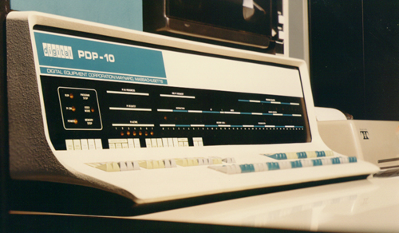
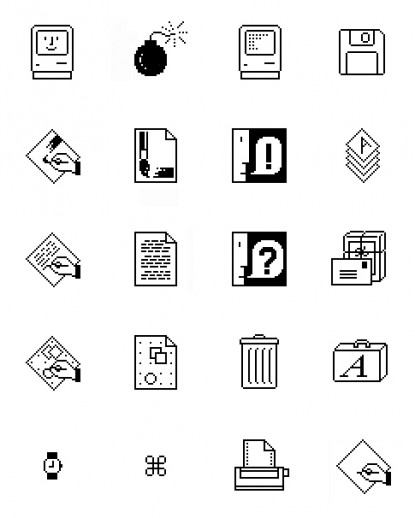
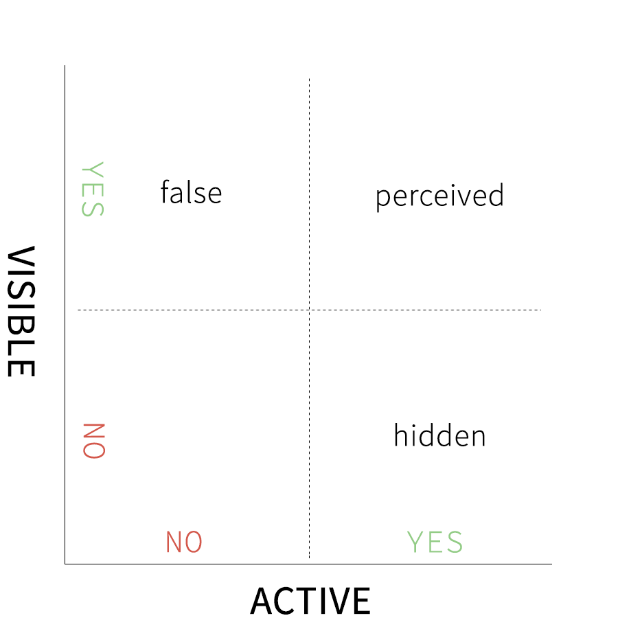
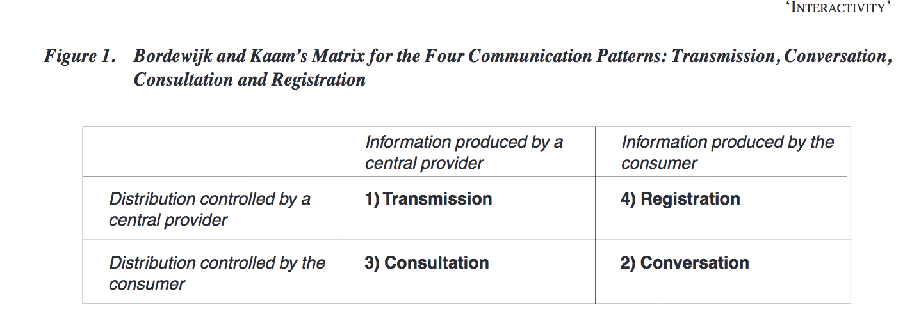
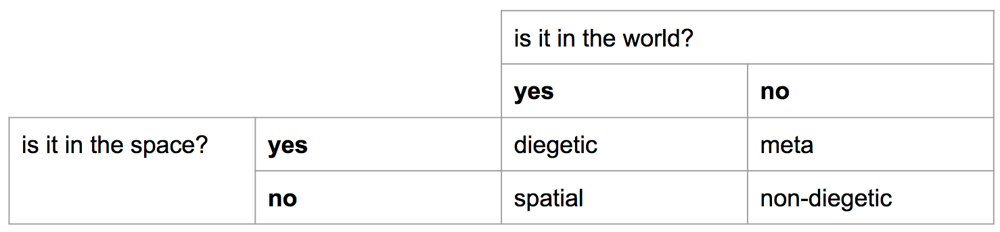
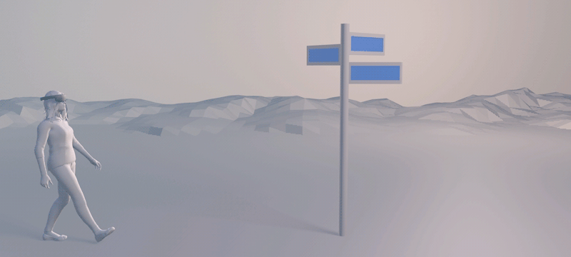

interfaces
interfaces
and interactions
housekeeping
uploading your homework on your blogs (turn link sharing on!)
attendance!
ipads + xcode
homework review
1. building an app
2. curating a set of objects
the medium
what is a medium?
marshall mcluhan
how can a medium also be a message?
the message

the extension
media is an extension of ourselves, it helps us see, remember, talk and listen
the interface
what is it?
an interface
is a place of contact between two unknowable, foreign systems
the need for digital interfaces
a computer is either:
- a piece of tape
- a machine that can do anything
history of computer interfaces


susan kare
metaphors
we came up with the desktop metaphor to make things more understandable
what other metaphors did we come up with?
theater
what do interfaces have to do with theater?
theater and interaction design
"settting the stage" for an action
using an interface is performing a role
an interaction
what do you need for an interaction to happen?
affordances
all possible and obviously aware actions that one could do when presented with an object.
different kinds

desgined affordances
interfaces are designed affordances with a purpose to act and know about something else.
because the digital is a black box exclusively made up by people.
metaphors
they relate to human nature, relate to real life
theater as set design
paradigms
shared meaning, and shared context
a good conversation

making interfaces
interfaces have:
- an input and an output
- a dialogue
- a function
- an organization
making interactions
visibility
feedback
constraints
mapping
cognitive response
thoughtful response
vulnerability
reciprocity (eye contact)
paradigm > identifying the importance
place of the interface

interface in augmented reality



diegetic
break
ARKit remote
aka how to speed up development!
unity - interaction system
two main components:
canvas
event system
unity - canvas
canvas is a game object which holds other UI elements
unity - event system
you need an event system to listen for events
and you need an event trigger on the object you want to interact with
if you want to interact with 3D objects, you need a Physics Raycaster on the object
exercise - UI
option A: make a button which creates a gameobject, and one which destroys it
option B: make a scrollable text in 3D space which creates objects as the user reads it.
unity - raycasting
all input relies on a technique called raycasting

unity - input
mouse input is straightforward > Input.GetMouseDown(0)
touch input involves the step of counting how many inputs are happening
exercise - input and UI
UI - option A: make a button that creates a game object.
UI - option B: make a ScrollRect that creates game objects as you read through the text.
Interaction - option A: make an object react when you touch it
Interaction - option B: rotate an object left and right when you drag over it
homework
build your own virtual museum!